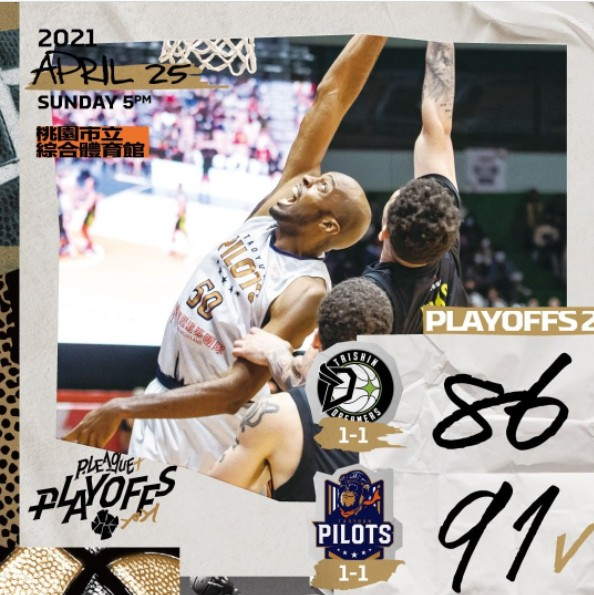
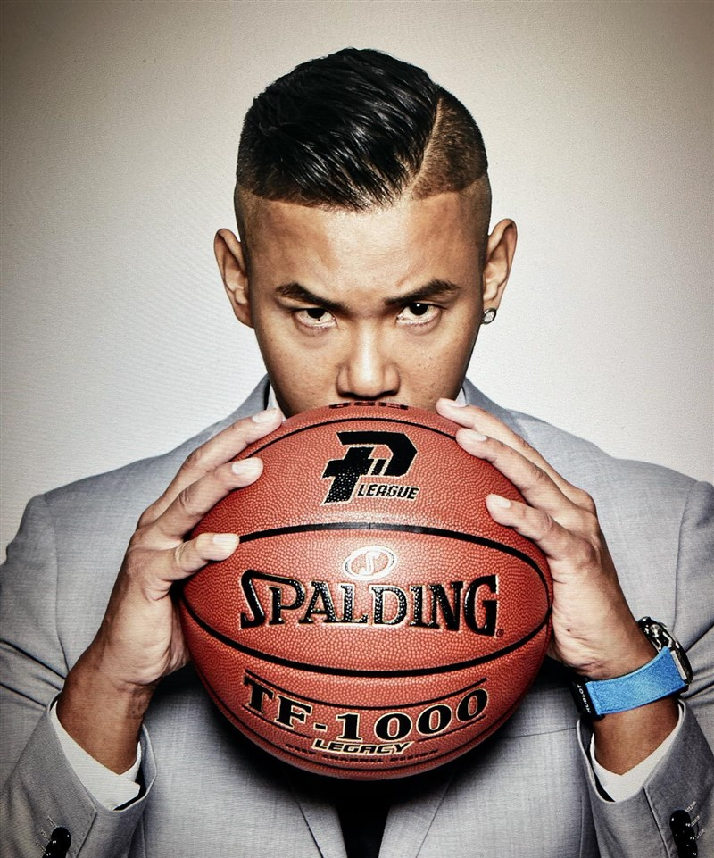

P+聯盟的成立不僅是讓台灣籃球重新邁入職業階段，也開始了這一兩年的籃球熱潮，開始讓許多人重新認識台灣籃球，不只是更多球員有了發光發熱的舞台，也讓每個大城市有一隻可以支持的在地化職業隊伍，身為台灣籃球賽事愛好者，這無疑是我最樂見的一件事情!🎉
前言
寫這篇文章的當下，已經是PLG第二季的後半段了，五連勝的攻城獅將於4/17對戰七連勝的國王，越來越白熱化的戰情，讓我更加的期待季後賽的來臨，也趁著假日把P+元年的一些心得記錄下來，可能沒辦法鉅細靡遺，但我就從一個粉絲的角度去分享我的看法~
在討論P+以前，先來幹古講講台籃的一些歷史吧，不想看可以直接從 #天時地利人和 看起。
因為我老爸老媽很喜歡看體育賽事，小時候吃飽飯電視不是播著八點檔就是體育賽事，我從小就這樣跟著看各種大大小小的球賽，也慢慢的變成一種習慣，不管是棒球的世界經典賽、曾雅妮的高爾夫球后傳奇、網壇三老的大滿貫巔峰對決(殊不知長大還是這三個人🤣)，還是國內的SBL籃球賽事、一年一度的瓊斯杯，這些種種的賽事拼湊成了我的電視兒童回憶。說回SBL，當時我們家分為三派，分別是: 老爸老媽的裕隆鼎仔派、姐姐們的達欣壘哥派、我支持的台啤野獸派，當時每逢季後賽我們家就會分成不同立場各自支持自己喜歡的球隊，但到了瓊斯盃這些偶像們集結成中華藍隊，我們就會團結一心抗日、抗韓，現在想起來還真是有趣。
讓我喜歡上野獸也是讓我最印象深刻的一幕，是在對方一波攻籃未進後，傑哥自己抓下籃板，一路從底線殺進對面籃框，連續過了五個防守球員，最後一個大轉身上籃得分，發出了野獸般的怒吼… 看到這一個play我整個驚呆了，自此整個愛上台啤、愛上野獸、愛上林志傑。當時的SBL巔峰期，沒有洋將的單打獨鬥，只有明星球員彼此間的高強度對抗，滿場的觀眾都在期待著自己支持的隊伍可以拋下勝利的彩帶，家家戶戶都守在電視機前面加油吶喊，那些日子真的是滿滿的熱血與回憶啊🚬
581的冰河時期
SBL的精采賽事讓更多有實力的明顯球員被看見，不知道哪時候開始SBL的明星球員紛紛西進投入對岸的CBA聯盟尋求更高強度、更優渥薪資待遇的發展，敏哥、大房東、壘哥、傑哥等…幾乎多數一線球星都前往CBA發展，球員追求更高級別舞台是好事情，但對於SBL來說可能就不是了。球星的出走、不用心的經營模式、沒有行銷與話題性、籃邪的擺爛，加上裁判吹判爭議等，慢慢的大家對於SBL的熱情也下降不少，進場看球的觀眾一年比一年少，也讓SBL進入了很長的冰河時期，頂多到了季後賽或是冠軍戰才會有比較多話題，平常大家基本上只會討論NBA，而SBL也看不出來有作甚麼樣改革的打算，就是一直擺爛下去而已。
這個情況到了近幾年才有一些轉變，不過也不是SBL本身祭出甚麼新政策，而是在彰化成立了一支新球隊— 寶島夢想家 ，加入ABL東南亞職籃，以國家為單位的跨國職業籃球聯盟，因此有了主客場的制度，也在彰化地區培養了一批粉絲，在CBA的一些老台將也被招納回國，像是壘哥、念哥、李學林，慢慢讓台灣球迷看到了點新玩意兒。19年，原本在SBL奪冠的富邦勇士隊，也輾轉加入了ABL，陸續徵招了傑哥、頂哥、文誠，並在和平球館開幕戰奪下勝利，明星球員的加持讓越來越多人注意到的ABL的賽事，好像看到台籃的另一道曙光，不過ABL本身賽事比較少，並沒有真正的掀起熱潮。
天時地利人和
19年底爆發了武漢肺炎，疫情影響了國際間的往來，也中斷了ABL的賽事。2020年年中由陳建州籌組的P.LEAGUE+正式成立，是繼2000年的中華職籃(CBA)後台灣第二個職業籃球聯盟，由原本在ABL的寶島夢想家(改名為福爾摩沙台新夢想家)與富邦勇士(改名為台北富邦勇士)，加上從SBL璞園體系分出來的桃園領航猿，以及新成立的新竹攻城獅(改名為新竹街口攻城獅)四隊組成元年球隊，打出「#是時候了」口號宣告台灣職籃的回歸，並於2021/10/17在新竹縣立體育館舉辦第一場官辦熱身賽。
說真的，雖然ABL賽事稍微提高了一些熱度，但我也沒有太多的關注籃球，在P+聯盟成立的時候我和許多球迷都是一樣的想法: 台籃沉寂(or擺爛)了10幾年，真的有辦法重拾當初的感動嗎? 還是雷聲大雨點小，再度消費球迷的情懷? 抱著這種懷疑的態度我也很想看看這個聯盟第一場賽事會是怎麼樣。
第一場官辦熱身賽
第一場官辦賽事讓新成立的球隊在新的主場挑大樑，不僅是讓新球隊可以更快上軌道，也是測試P+聲量的重要一戰(雖然只是熱身賽)。熱身賽因為不是只有主場球隊打一場，而是可以一票兩吃從早看到晚，所以觀眾也是很捧場，看官網數據是全部賣光了~ 對於一支新成立的球隊，球員除了最強高中生高國豪還有老將吳岱豪，基本上都是名不經傳的球員或菜鳥，但我記得這場比賽攻城獅打的很有韌性，面對壘哥敏哥陣守的夢想家，仍然打出一場好球，印象中還有家瑞的灌籃高光，整體來說是一場很不錯的球賽，面對滿場的觀眾，昔日熟悉的熱鬧感似乎重現了。而眾星雲集的勇士隊依然是票房保證，洋將率先亮相也在熱身賽以5W1L的好成績迎接開幕。
其實看完第一戰新竹熱身賽，我就很喜歡這種感覺，不僅是主客場制度讓粉絲可以更有向心力、凝聚力，也讓不同對戰組合充滿話題性，使得各隊支持的球迷更加期待賽事的開打。
宇宙勇的獨走
開幕戰是由兩隊比較成熟的隊伍率先開打，夢想家有壘哥敏哥坐鎮，勇士有傑哥鼎哥文誠的福祿壽組合，這場比賽在開打前就是話題性十足，而且不得不說，有球星加持門票真的比較好賣，尤其傑哥基本上是全台主場了😍(以第一季來說)。這場比賽真的很高張力，一開賽由敏哥一個上籃and1得到PLG象徵性的第一顆field goal，整場比賽很膠著，到了第四節尾聲還是由野獸出來接管比賽，一顆左邊45度角的三分球，象徵著辣個男人還是有主宰比賽的能力，別小看39歲的老頭子了！
開季富邦拉出一波6連勝，宇宙勇蒿吐露絲。1/17富邦在自家主場面對攻城獅想要繼續挑戰七連勝，但開局攻城獅打得之流暢啊，怎麼投怎麼切都有，中場還是攻城獅握有3分的領先，來到第四節決勝時期靠著JuJu締造聯盟首次大三元以及陳堅恩單節三顆三分球收下比賽，中止富邦連勝，這場比賽真的讓大家跌破眼鏡，竟然會是墊底的攻城獅率先擊敗宇宙勇，打出了一場精采好球！我也是這場比賽被攻城獅收服的🤩
新竹行銷之鬼
其實開季幾場比賽+熱身賽的精彩內容，已經讓P+快速積累很多粉絲了，應該說喜歡看球的人沒有不見，是新職籃的出現重新喚起大家的記憶。主客場制度其實可以吸收很多原本沒在看籃球的客群，第一個是因為利用城市情懷，可以給出一個合理的進場理由，球館又在自己家鄉附近而已，不會像以前看個瓊斯盃都要大老遠從台中上去台北，甚至還要額外花時間找食宿。第二個是球隊在地化的經營，過往SBL的球隊並不會(或比較罕見)和地方政府合作冠名，打完比賽就拍拍屁股走人，但P+的城市球隊概念讓每支球隊綁定地方政府，球隊需要政府的資源支持(場館、交通等)，同樣的政府也希望球隊擔當起應該的社會責任(或是球隊有意識到自己的社會責任)，這點我認為攻城獅球團作的很好，第一季常常看到球隊會去各個大學、高中、國中校園參訪，和學校球隊切磋、互動，不僅能快速將觸手伸入城市各地，也能為學生帶來不一樣的風氣，會吸引更多好手投入其中。另外一部份就是下鄉的交流，讓更多人能夠認識這個城市的不同角落(像是新竹縣的司馬庫斯)，這絕對是雙贏的局面，凝聚整個城市的力量，也為球團帶來很大的商機。
想必有在看球賽的一定知道，新竹攻城獅有 行銷之鬼 的稱號，這點我真的滿佩服的，新組織起來的團隊在行銷話題、公關手法、執行速度都非常讓人敬佩，從形象照拍攝、塑造看板球星、到對議題的消費(像是得到歷史新低67分，隔天商城67折)、Youtube的Coding紀錄雞湯喝到飽等，很多不同面向的行銷手法，快速的積累非常多的獅粉(和獅黑?)。其實可以從攻城獅的成功行銷手法看來，新媒體已經漸漸取代傳統媒體，不管是Youtube還是Instagram，獅在這兩個平台粉絲數量都是聯盟第一，也讓其他球團慢慢重視新媒體上的經營。
主場氛圍體驗—喵邦大戰
攻城獅的行銷手法為PLG帶來很大的聲量，加上自帶流量的高國豪，在新竹讀書的我也慢慢被圈粉了哈哈~ 決定和女朋友及幾個朋友進場看球支持一下😋 上一次買票進場看球已經是17年瓊斯盃的台韓大戰了，很期待時隔多年的新聯盟主場氣氛如何! 挑了人氣最高的對戰組合來看，除了體驗攻城獅的主場外，也是希望可以看看黃金世代的偶像們❤
新竹主場經營的很不錯，從外面的攤位規劃，到館內各種互動廠商、商品部，基本上都是贈品拿飽飽、活動玩不完，球場內的設計也讓球隊特色很鮮明。

一樓這座位真的不賴，視野很好、臨場感也不錯，甚至可以聽到湯綸在講話，距離球員很近~ 我們坐在主場球員通道這側，在進出場時都可以近距離看到球員。而球賽進行間主持人志彥、啦啦隊和球迷都有不少的互動，三四節之間也會跳攻城獅知名的加油舞蹈，雖然最後還是輸給宇宙勇QQ，但整體的主場體驗很不錯，感覺得出來球團的用心規畫，真的是會想要再進場看球一次(隔年第二季我也有再度進場XD 以後再分享一年後的主場改變)。
岔個題外話，文章撰寫時間是在第二季末段，大家也知道攻城獅主場主持人志彥有鬧出一些風波，像是 #還沒講完 、 #貴為執行長 等等，我也想來講講自己對於志彥的看法: 在P+成立以前我就多少知道志彥哥了，國內很多籃球賽事都聽得到他的聲音，也可以說是老江湖了~ 我其實滿喜歡志彥哥的主持方式，雖然音樂比較老派，但就簡單有效，熟悉的音樂很容易把氣氛炒起來，志彥也滿喜歡跟球迷互虧，我就在場邊互開過無傷大雅的玩笑XD，讓我覺得很輕鬆愉快，相較於其他主場比較年輕的主持人或DJ，喜歡用低沉的聲音大吼，略顯尷尬。我覺得這就是經驗的差別，志彥給我一種hold住全場的氣勢，其他主場比較像是主持人在完成他的工作，並沒有讓我有投入的感覺。回歸到爭議事件本身，在宣讀判決的確有點不夠專業，不過過去台籃賽事基本上都是交由主持人宣讀，事後有看到聯盟快速做出反應，爾後重大判決都改由裁判宣讀了，這點要給聯盟一個讚，至於 #還沒講完 這部份我完全不覺得有怎麼樣，維持現場秩序以利判決完整傳達，語氣也跟進場的感覺差不多，一堆鄉民覺得被罵了實在有點好笑,___,。 而 #貴為執行長 這部分的確做了不好的示範，做錯事就要承擔沒毛病，不過隔幾週球團把志彥找回來當主持人，也沒有很意外啦，畢竟賽季後半段再找一個新主持人的成本滿大的，有一個富有經驗的老牌主持人還不用才有問題XD
有點扯遠了哈哈，還是著重在元年的事件上~
新人王之爭
第一季另外一個值得關注的議題就是夢想吉娃娃林俊吉以及攻城獅看板球星高國豪的新人王之爭，國豪作為當家控衛，在整季的比賽上都獲得滿固定的上場時間，不管在進攻端上的得分輸出，還是防守端的第一線壓迫和抄截，綜合表現是很亮眼的，當大家都覺得高穩坐新人王之時，阿吉在下半季跳了出來，逐漸適應職業比賽的強度，在進攻端上的成長非常誇張(尤其是三分球的把握度)，下半季看阿吉投籃都可以直接把手舉起來了，尤其是39分的紀錄之夜(what a amazing night!!💥)，看完那場比賽我整個驚呆了，直接被阿吉圈粉!
新人王因為阿吉亮眼的表現而有了點懸念，因為國豪上下半季表現差不多，沒有特別亮眼但仍然維持水準之上。這兩個新人的表現都很讓人讚賞，誰得到新人王都是很棒的事情，讓彼此更多良性競爭，不過我還是支持國豪多一點，畢竟是Rookie of the year，以一整季的表現來說，國豪應該會更合適，當然大家也可以有各自的想法啦~ 但每次扯到這種二選一問題，鄉民永遠都是踩一捧一，一邊的支持者覺得另一邊很爛，這種心態真的是ㄏㄏ。最後還是由國豪奪下P+元年新人王，也希望這些小將可以持續繳出好表現，在未來5年10年間可以孕育出下一個黃金世代!
季後賽
雖然我喵季末拉尾盤，但為時已晚，仍然無緣進入季後賽QQ 不過季後賽真的是很精彩刺激! 季後挑戰賽由二三名的夢想家與領航猿開打，賽前大家普遍認為夢想家會快速收下這個系列戰，因為領航猿洋將出走，本土可用之兵太少，Q又飽受傷病困擾，有一場沒一場的。但第二場打出了不可思議的一戰，從落後20幾分一路苦苦追趕，靠著新加入的洋將喬丹和Q(用生命打球的男人😭)的高位擋拆，搭配本土一哥使勁搖，最終逆轉了戰局擊敗夢想家，第三戰也在落後超過雙位數的強況下再度逆轉戰局，在系列賽取得2-1的聽牌優勢。

第四戰夢想家則是靠著Hicks優異的表現扳平了戰局。第五戰前三節打得很膠著，直到最後一分鐘夢想家僅僅是以93:91兩分領先領航猿，而最後一個play不意外是做給狀況最好的阿堯，透過一個screen阿堯也繞出了三分線的空檔，只可惜最後沒能投進絕殺球，也讓領航猿結束了這個賽季，真的很可惜，但雙方打出了很好看的系列戰👏(不過私心希望夢想家贏，Q真的太操勞 猿的戰力能打到這樣已經很扯了)
總冠軍賽也好看，但戲劇張力就沒有這麼高，又有敏哥的25秒三分球爭議，加上台灣疫情爆發，最後也由聯盟裁示由取得3-1領先的富邦勇士獲得P.League+元年總冠軍。感覺有點草率的結束第一季，不過也是疫情之下不得不的作法。(冠軍獎盃很帥XD)
P+元年的看法
一整年下來，我覺得新聯盟的成立取得廣大迴響以及成功並非沒有道理，很多小地方都可以看到聯盟、球團的用心。💯
從球員來看，光是很多西進的球星回台灣打球就已經是非常大的話題了，能夠看到這些黃金世代的球員真的很開心，都是滿滿的回憶，也是另類的票房保證。不過其他本土球員的實力認真來說和SBL並不會差異太大，P+透過雙洋將的制度讓整場比賽張力、對抗性提升，也會有更多空接或是爆扣的高光。再利用洋將四節七人次的制度去平衡，不會讓比賽淪為洋將刷分的競賽，最終的勝負結果還是取決於本土球員穩定的發揮(如宇宙勇)，所以還是能看到很多新生代、中生代球員挺身而出接管戰局，包括阿吉、力煥、國豪、阿堯、達佑等。
從球團來看，攻城獅的行銷包裝真的是聯盟典範，光是從粉絲或黑粉數量看就知道，ptt討論攻城獅的文章也是一篇接一篇，P+元年製造這麼大的聲量有一大部分真的要歸功於獅的球團。從數據面來看，元年的勇士和攻城獅兩支球隊皆有賺錢(應該賺不少XD)，富邦本身自帶球星光環也並非新創隊伍姑且不論，獅的操作對於球團的營運肯定是正面的影響，尤其是包裝出高國豪的球星價值，3500萬的合約就可以看出他為球團賺進多少銀子了~
最後是聯盟本身，我還是很感謝黑哥願意挺身而出籌建了P+，有多少人能夠做到這件事情(更不用說看到P成功馬上創建T1的那批人 吃相難看)，黑哥為台籃的付出大家都能看到，幾乎每場比賽親力親為。聯盟從根本制度上去改變，讓我們看到很多新鮮且不一樣的事情，主客場制度、雙洋但只有七人次、裁判好好說、yt平台免費直播、很高質感的美術形象設計，加上黑哥本身的演藝圈人脈，讓很多明星也到場支持，每件事獨立看來都是小事情，但就是因為從這些小細節上做改變，才能造就P+的成功，真的很謝謝黑哥、力挺聯盟的四支球團，還有每個願意花錢進場支持台灣籃球的球迷們，台灣籃球自從13年擊敗中國隊後就沉寂已久，雖然P+對於目前台籃實力並不會有立竿見影顯著的提升，但希望未來五年、甚至十年後，可以看到另一批黃金世代帶領國家隊打出好成績!
